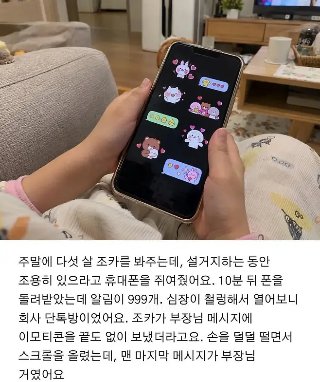
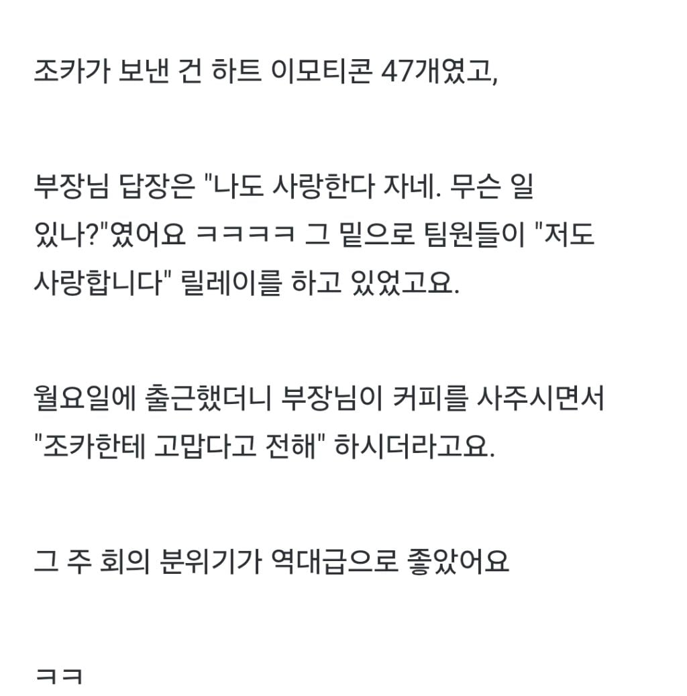
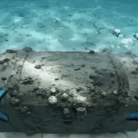

71 · 21 · 5 시간 전 · 원문


수집 당시 댓글 21개
유아학교 · 6 시간 전
↳ 답글 · 우메와모모의평범한일상 · 6 시간 전
↳ 답글 · 벌교꿀주먹 · 5 시간 전
뀰단 · 6 시간 전
천한댕댕이 · 6 시간 전
이게 love wins all 인가 그거냐
ㅇㅇ1597 · 6 시간 전
Ai주작이래 이거
↳ 답글 · CP병 · 5 시간 전
아 내 개추 돌려줘
↳ 답글 · 루이비통닭 · 5 시간 전
댕멍꿀꿀 · 6 시간 전
대패삼겹살 · 6 시간 전
희망편
icandododo · 5 시간 전
스크래치헬멧 · 5 시간 전
역시 회사생활은 조카가
광구쟁이 · 5 시간 전
부장님은 진심이었을텐데
↳ 답글 · 재다이얼 · 5 시간 전
헉
↳ 답글 · 금례씨 · 5 시간 전
또 나만 진심이었지 김대리
스크랩보기 · 5 시간 전

우덜라이트 · 5 시간 전
옛날에 명절만 되면 잼민이 사촌동생이 내 폰 가져가서 온갖 단톡방에다 인사를 돌렸었는데ㅋㅋ
Rldydhd · 4 시간 전
❤️
화간호사 · 4 시간 전
내 조카도 똑같은 사고를 친적 있어서 주작이라 말못하깄다 ㅋㅋ
바보도알수있게 · 3 시간 전
bbbddd · 3 시간 전
아들 애기때 잠깐 핸드폰 줬다가 갤러리속 사진들 인스타에 올라간 적 있음...
댓글
수집 당시 댓글 21개
유아학교 · 6 시간 전
· 우메와모모의평범한일상 · 6 시간 전
· 벌교꿀주먹 · 5 시간 전
뀰단 · 6 시간 전
천한댕댕이 · 6 시간 전
이게 love wins all 인가 그거냐
ㅇㅇ1597 · 6 시간 전
Ai주작이래 이거
· CP병 · 5 시간 전
아 내 개추 돌려줘
· 루이비통닭 · 5 시간 전
댕멍꿀꿀 · 6 시간 전
대패삼겹살 · 6 시간 전
희망편
icandododo · 5 시간 전
스크래치헬멧 · 5 시간 전
역시 회사생활은 조카가
광구쟁이 · 5 시간 전
부장님은 진심이었을텐데
· 재다이얼 · 5 시간 전
헉
· 금례씨 · 5 시간 전
또 나만 진심이었지 김대리
스크랩보기 · 5 시간 전

우덜라이트 · 5 시간 전
옛날에 명절만 되면 잼민이 사촌동생이 내 폰 가져가서 온갖 단톡방에다 인사를 돌렸었는데ㅋㅋ
Rldydhd · 4 시간 전
❤️
화간호사 · 4 시간 전
내 조카도 똑같은 사고를 친적 있어서 주작이라 말못하깄다 ㅋㅋ
바보도알수있게 · 3 시간 전
bbbddd · 3 시간 전
아들 애기때 잠깐 핸드폰 줬다가 갤러리속 사진들 인스타에 올라간 적 있음...